ggplot(data = <DATA>) +
<GEOM_FUNCTION>(mapping = aes(<MAPPINGS>))6 Ngữ pháp của biểu đồ với GGPLOT2
6.1 Giới thiệu
Trong lĩnh vực phân tích dữ liệu, bên cạnh việc biến đổi dữ liệu, kỹ năng trực quan hóa biểu đồ là kỹ năng đặc biệt quan trọng, giúp cho người đọc báo cáo, phân tích nắm được kết quả phân tích một cách đơn giản hơn.
Với R, package đặc biệt quan trọng trong trực quan hóa là package ggplot2. Thư viện này được phát triển để thực hiện khái niệm ngữ pháp của biểu đồ và trở thành thư viện nổi tiếng nhất của R trong việc trực quan hóa dữ liệu. Một loạt thư viện khác được phát triển xung quanh ggplot2 và trở thành một tiểu hệ sinh thái giúp vẽ biểu đồ cực kỳ hiệu quả.
Khái niệm “ngữ pháp của biểu đồ” cho rằng: Mỗi biểu đồ được tạo ra do 2 hay nhiều lớp chống lấn mà thành. Các lớp của biểu đồ bao gồm
- Các lớp (layer) cơ bản (bắt buộc phải có)):
- Dữ liệu (data): Tập số liệu được sử dụng cho việc xây dựng biểu đồ.
- Biến (aesthetic attribute): Xác định các biến trong dữ liệu được sắp xếp như thế nào. VD: trục tung, trục hoành là biến nào? Màu sắc được sắp xếp theo biến nào? Độ lớn của mỗi điểm được xác định theo biến nào?
- Tính chất hình học của biểu đồ (geometric object): xác định loại biểu đồ được sử dụng. VD: biểu đồ cột, biểu đồ điểm (scatter plot), biểu đồ dây (line chart)
- Các lớp (layer) nâng cao (không bắt buộc):
- Facet (tạm dịch: cách thức sắp xếp số liệu trên cùng 1 biểu đồ): Xác định cách thức sắp xếp vị trí của nhiều biểu đồ trên cùng một màn hình.
- Tính toán thống kê (statistical transformation): Sử dụng các tính toán trong biểu đồ. VD: Thêm các biểu đồ xu hướng dạng trơ (geom_smooth) , số lượng bin trong histogram… Lớp này có thể nằm lồng trong ngay trong nhóm
aesthetics - Vị trí (position): Xác định vị trí trong biểu đồ
- Trục tọa độ (Coordinate): Xác định hệ trục tọa độ vẽ biểu đồ. VD: Hệ tọa độ 3 trục trong không gian (hệ tọa đồ Descartes), hệ tọa độ cực
Các lớp trong biểu đồ có thể thể hiện thành các lớp như sau 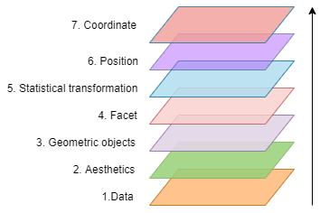
Việc hiểu và nắm vững nguyên lý của ggplot2 sẽ cho phép chúng ta xây dựng gần như bất kỳ biểu đồ nào.
6.2 Xây dựng biểu đồ
6.2.1 Biểu đồ cơ bản
Câu lệnh cơ bản của ggplot như sau:
library(tidyverse)
library(patchwork)
mpg %>% head# A tibble: 6 × 11
manufacturer model displ year cyl trans drv cty hwy fl class
<chr> <chr> <dbl> <int> <int> <chr> <chr> <int> <int> <chr> <chr>
1 audi a4 1.8 1999 4 auto(l5) f 18 29 p compa…
2 audi a4 1.8 1999 4 manual(m5) f 21 29 p compa…
3 audi a4 2 2008 4 manual(m6) f 20 31 p compa…
4 audi a4 2 2008 4 auto(av) f 21 30 p compa…
5 audi a4 2.8 1999 6 auto(l5) f 16 26 p compa…
6 audi a4 2.8 1999 6 manual(m5) f 18 26 p compa…theme_set(theme_minimal())
ggplot(data = mpg) + # Dữ liệu là tập mpt
geom_point(mapping = aes(x = displ, # Trục x là displ
y = hwy, # Trục y là hwy
col = class)) # Color là class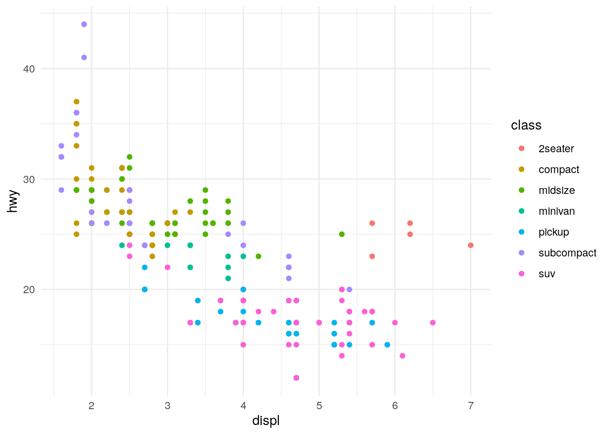
Trong ví dụ trên, ta đã vẽ biểu đồ điểm (geom_point) với tập dữ liệu mpg để phân tích quan hệ giữa hai biến displ và hwy và phân nhóm màu theo class.
Ta có thể vẽ biểu đồ với kích thước của từng điểm theo cyl như sau.
ggplot(data = mpg) + # Dữ liệu là tập mpt
geom_point(mapping = aes(x = displ, # Trục x là displ
y = hwy, # Trục y là hwy
size = cyl),# Kích thước theo cyl
col = "darkblue") # Tất cả các điểm có màu là blue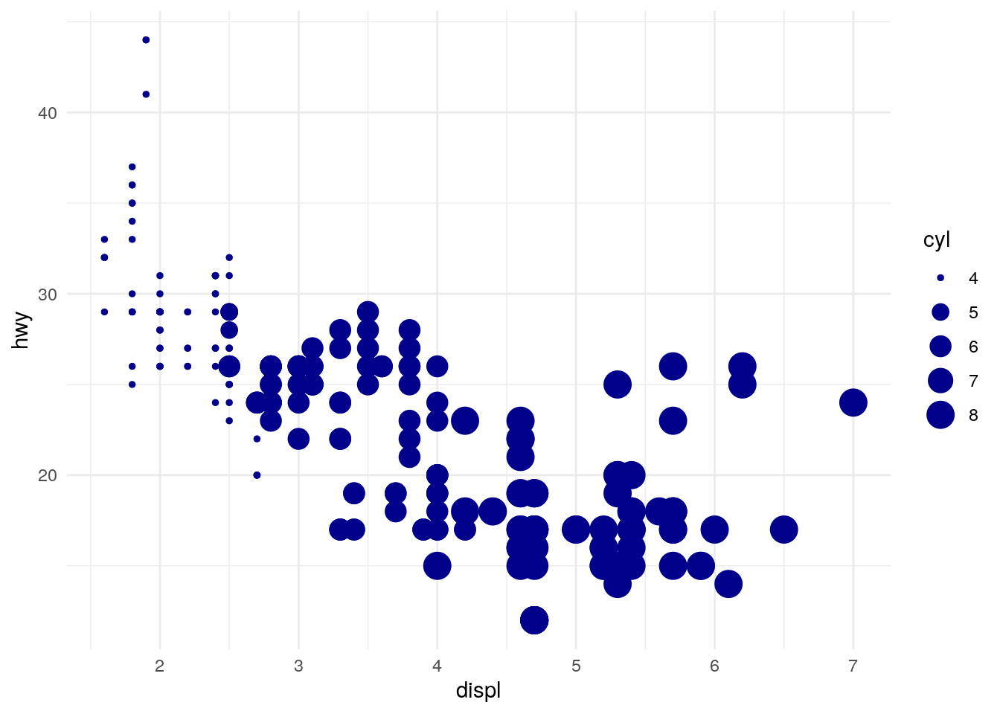
6.2.2 Facet
Facet cho phép chúng ta chia dữ liệu thành nhiều phần theo từng nhóm và xây dựng biểu đồ cho mỗi nhóm trong đó. Câu lệnh của facet như sau
facet_wrap( ~ group_variable, # Chia nhóm
nrow = 2, # Số lượng dòng trong biểu đồ
scale = "free") # "free" cho phép biểu đồ auto scaleggplot(data = mpg) +
geom_point(mapping = aes(x = displ,
y = hwy),
col = "darkblue") +
facet_wrap(~ class,
nrow = 2,
scale = "free")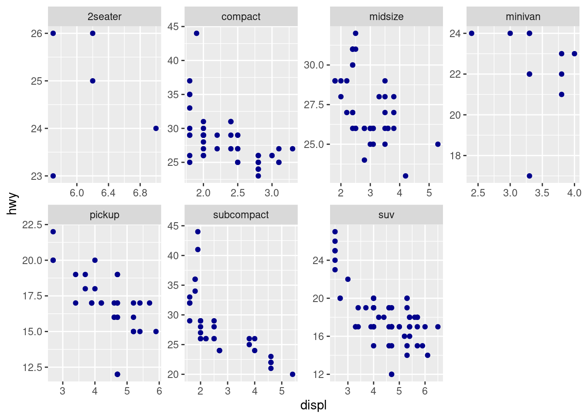
6.2.3 Thuộc tính hình học - geom
Các loại biểu đồ khác nhau trong ggplot2 chỉ khác nhau ở geom_ - thuộc tính hình học của biểu đồ. Mỗi geom sẽ có các tham số khác nhau cần được điều chỉnh.
Trong ví dụ dưới đây, ta vẽ 2 loại biểu đồ chồng lên nhau gồm 1. biểu đồ điểm và 2. biểu đồ thể hiện xu hướng
ggplot(mpg, mapping = aes(displ, hwy)) +
geom_point() +
geom_smooth()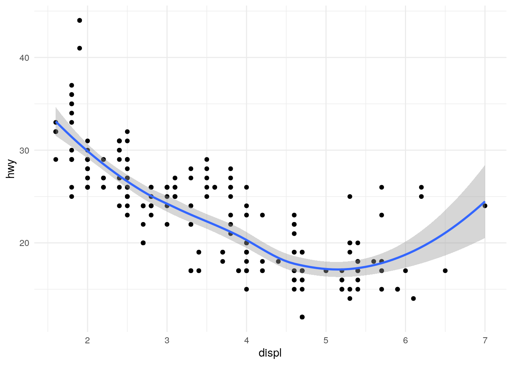
Lưu ý: Khi có nhiều geom_object, nếu không có sự điều chỉnh khi mapping của từng geom, các lớp sau sẽ lấy các biến global để làm thuộc tính. Trong ví dụ trên, hai lớp geom_point và geom_smooth lấy giá trị mặc định là aes(displ, hwy)
ggplot(mpg, mapping = aes(displ, hwy)) +
geom_point(alpha = 0.3) +
geom_smooth(aes(linetype = drv, col = drv),
size = 1.2)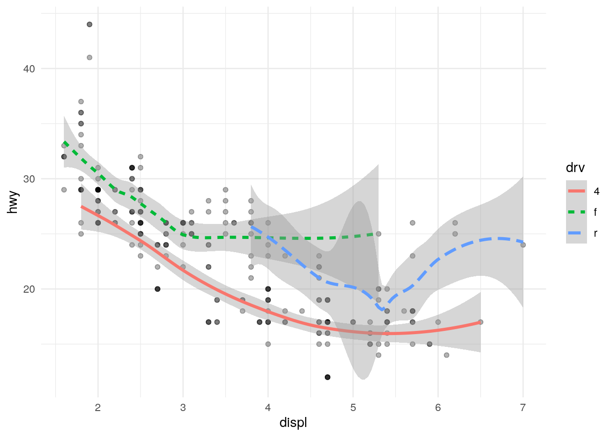
Trong ggplot2 có rất nhiều geom phục vụ các loại biểu đồ khác nhau. Tuy nhiên, để phục vụ công viên thực tế, trong ggplot2 cần nắm vững các loại geom quan trọng nhất như sau.
geom_point: Biểu đồ điểmgeom_line: Biểu đồ đườnggeom_boxplot: Biểu đồ boxplotgeom_col,geom_bar: Biểu đồ cộtgeom_smooth: Biểu đồ vẽ xu hướnggeom_histogram,geom_density: Biểu đồ phân phối
# geom_boxplot
mpg %>%
ggplot(aes(class, hwy)) +
geom_boxplot()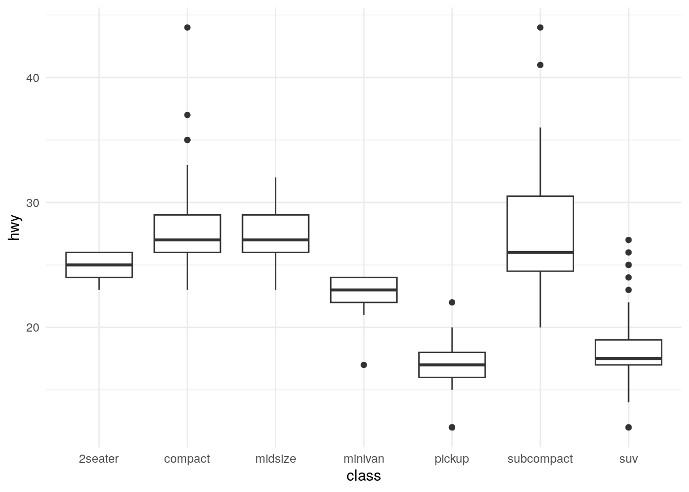
# geom_col
mpg %>%
ggplot(aes(class)) +
geom_bar(aes(fill = drv))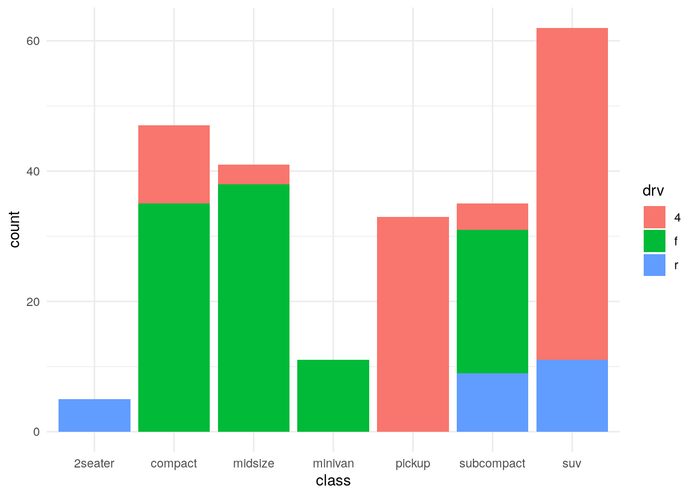
# geom_density
mpg %>%
ggplot(aes(hwy)) +
geom_density()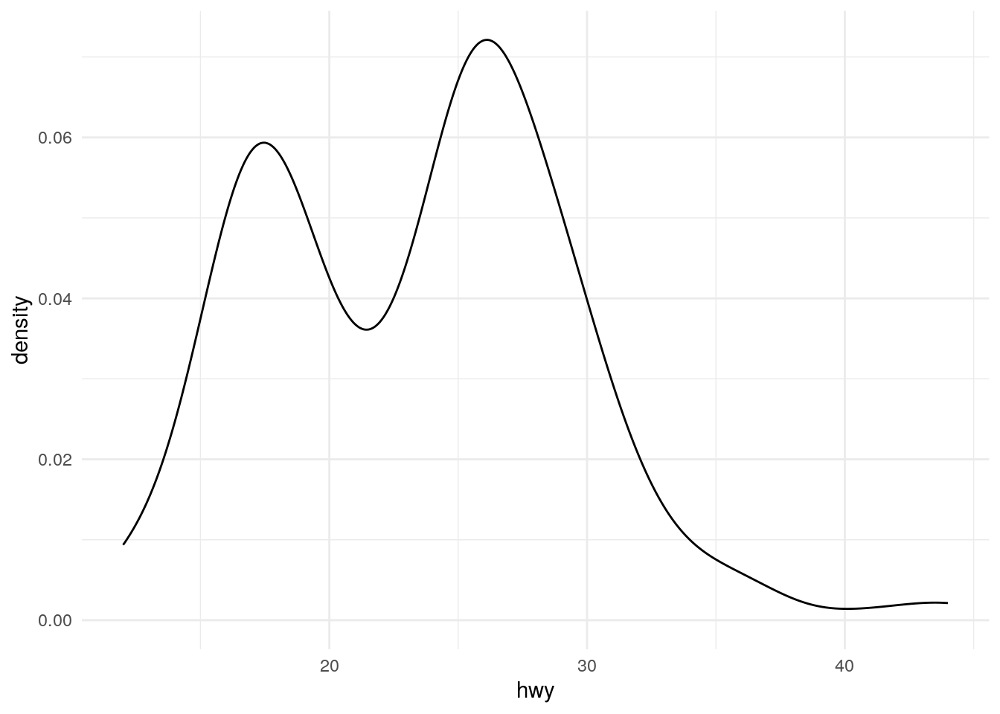
# geom_histogram
mpg %>%
ggplot(aes(hwy)) +
geom_histogram()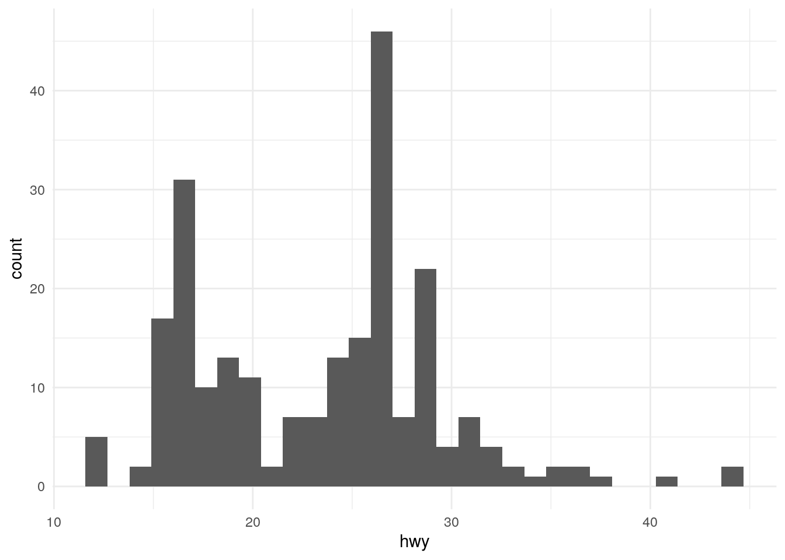
6.2.4 Tính toán thống kê - statistical transformations
Đối với lớp tính toán thống kê (statistical transformation), biểu đồ không được vẽ trực tiếp với 2 trục tung và trục hoành mà sẽ phải trải qua bước tính toán thống kê trước.
Xem ví dụ biểu đồ cột dưới đây.
ggplot(diamonds) +
geom_bar(mapping = aes(x = cut))Ở ví dụ này, trục x là các nhóm của cut trong khi trục y là số lượng quan sát ở mỗi nhóm, giá trị này không phải là biến trực tiếp từ dữ liệu mà là 1 biến phái sinh. Quá trình xây dựng biểu đồ được thực hiện qua 3 bước như sau.

Ta cũng có thể thay đổi lớp biến đổi dữ liệu trong biểu đồ trên để hiển thị dạng tỷ lệ phần trăm như sau.
ggplot(diamonds) +
geom_bar(mapping = aes(x = cut, y = stat(prop), group = 1))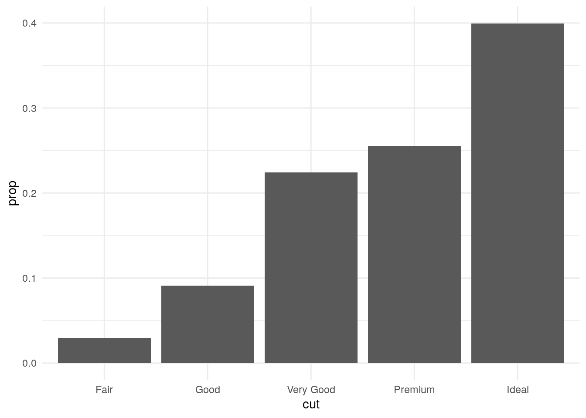
6.2.5 Vị trí trong biểu đồ
Quay lại ví dụ bar chart phía trên, khi xây dựng biểu đồ có 2 hoặc nhiều nhóm, biểu đồ có thể có 3 kiểu vị trí như sau:
position = "identity"(default): Giữ nguyên chế độ mặc định, để dạng stack bar với giá trị trục y mặc địnhposition = "fill": Tương tự “identity” nhưng mỗi cột sẽ có tỷ trọng bằng nhauposition = "dodge": Phân nhóm biểu đồ
Xem ví dụ dưới đây.
# position = "identity"
ggplot(diamonds) +
geom_bar(mapping = aes(x = cut, fill = clarity))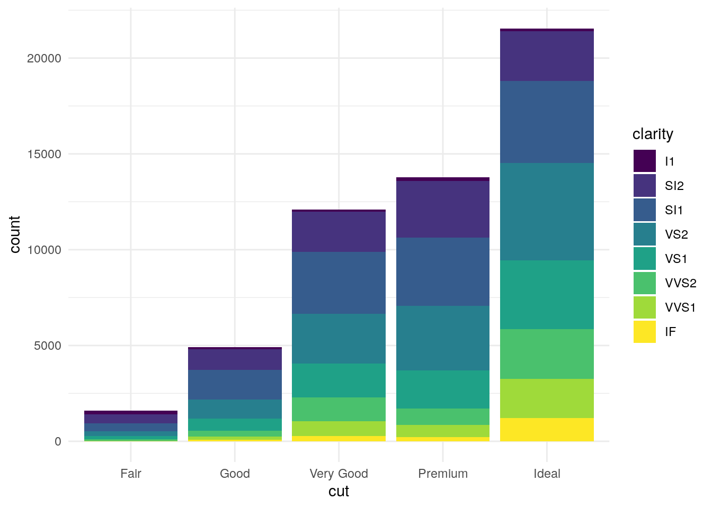
# position = "fill"
ggplot(diamonds) +
geom_bar(mapping = aes(x = cut, fill = clarity),
position = "fill")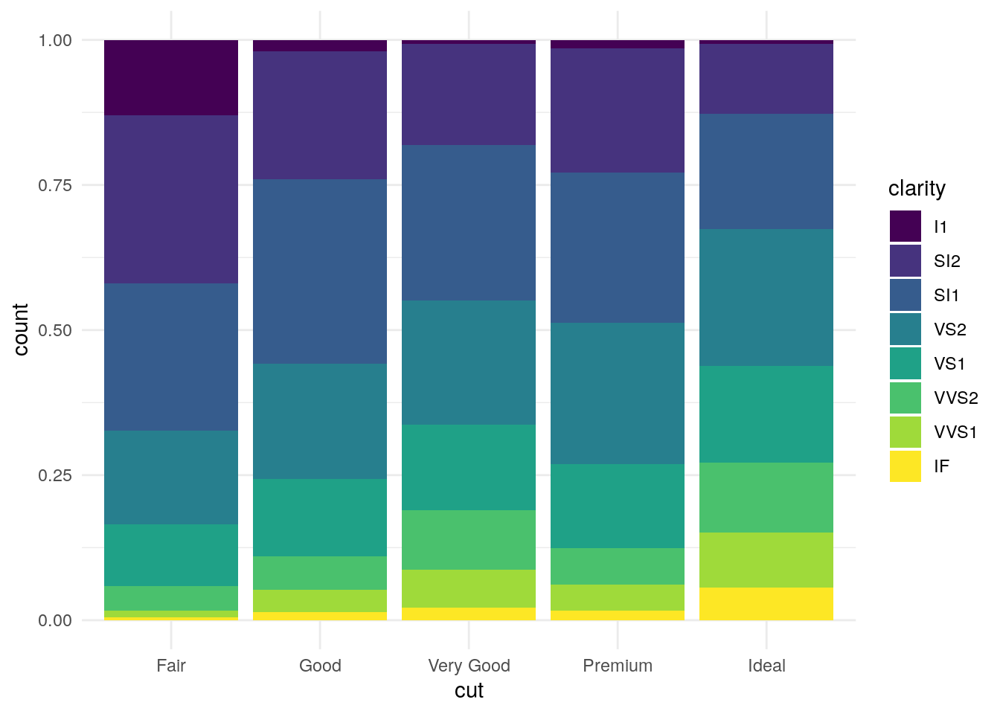
# position = "dodge"
ggplot(diamonds) +
geom_bar(mapping = aes(x = cut, fill = clarity),
position = "dodge")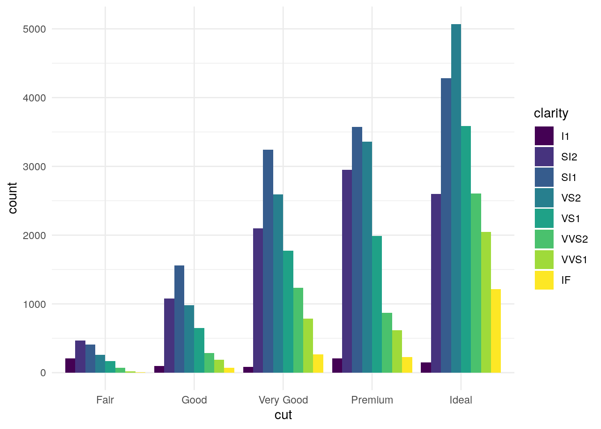
Bên cạnh 3 nhóm position trên, biểu đồ điểm còn có nhóm riêng là postion = "jitter". Option này cho phép thay đổi giá trị của mỗi điểm một lượng nhỏ để biểu đồ điểm không bị trùng lặp nhiều quan sát (khi nhiều quan sát có chung một giá trị). Nhóm này có thể sử dụng tương đương với geom_jitter.
ggplot(data = mpg) +
geom_point(mapping = aes(x = displ, y = hwy)) +
labs(title = "Without position jitter")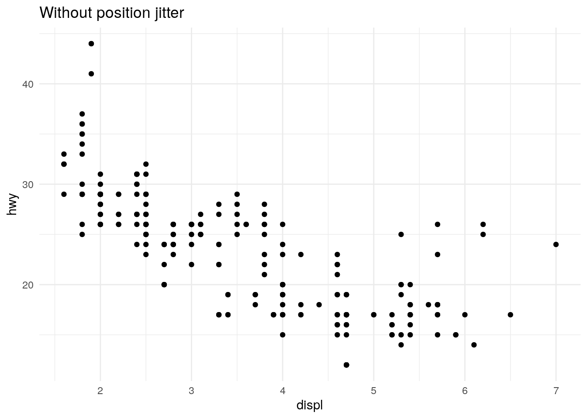
ggplot(data = mpg) +
geom_point(mapping = aes(x = displ, y = hwy),
position = "jitter") +
labs(title = "Position jitter")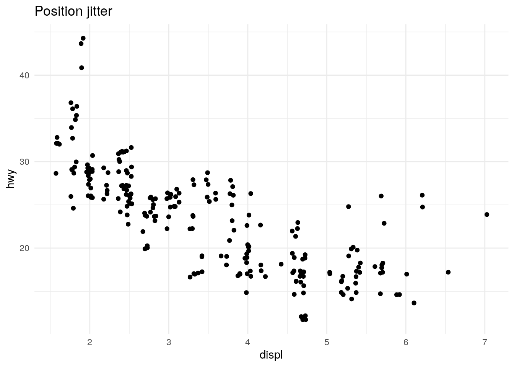
Đối với biểu đồ miền (area chart), ta có thể sử dụng option position = "fill" để thể hiện dạng phần trăm.
year <- 1875:1972
group <- c("A", "B", "C")
df <- expand.grid(year, group) %>%
mutate(level = rnorm(nrow(.), 50, 10) %>% abs)
names(df) <- c("year", "group", "level")
# Lấy theo số tuyệt đối
ggplot(df, aes(year, level)) +
geom_area(aes(fill = group), position = "stack")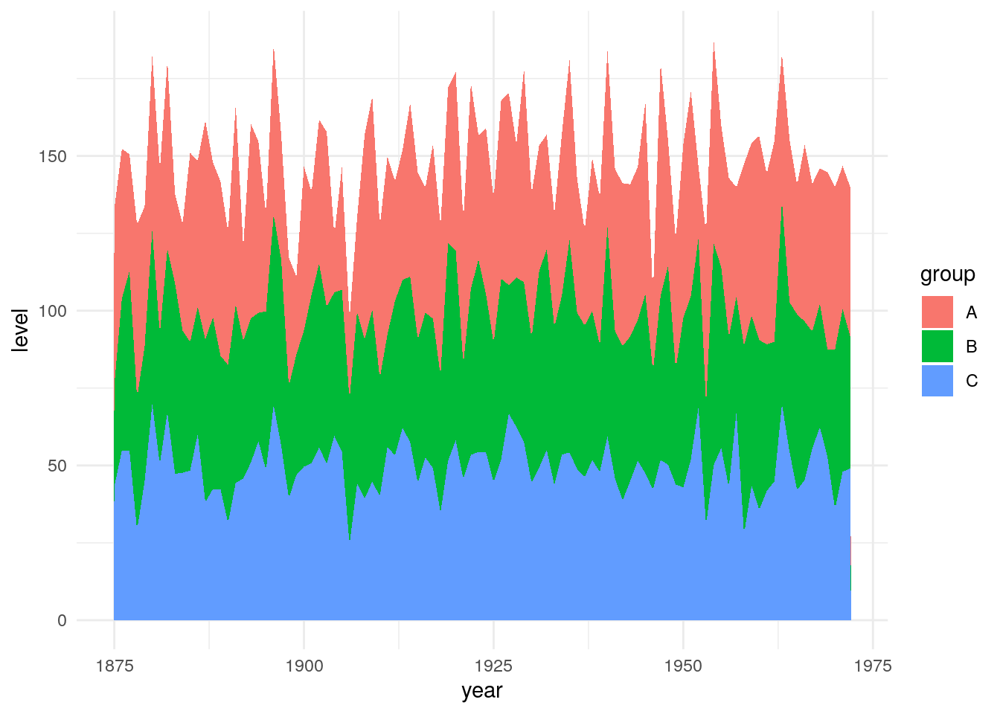
# Lấy theo tỷ lệ
ggplot(df, aes(year, level)) +
geom_area(aes(fill = group),
position = position_fill())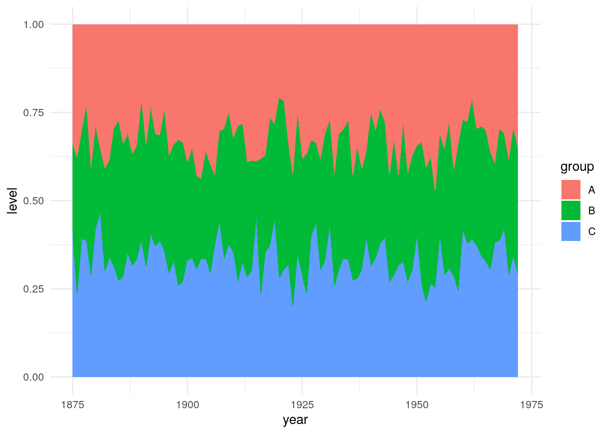
6.2.6 Hệ trục tọa độ
Biểu đồ thông thường được xây trên hệ trục tọa độ Đề-các với tỷ lệ 1-1. Bên cạnh hệ trục này, ggplot2 hỗ trợ các hệ trục tọa độ khác nhưng thông dụng nhất là coord_flip, cho phép đổi vị trí hai trục tọa độ cho nhau
iris %>%
ggplot(aes(Species, Sepal.Length)) +
geom_boxplot(aes(fill = Species)) +
coord_flip()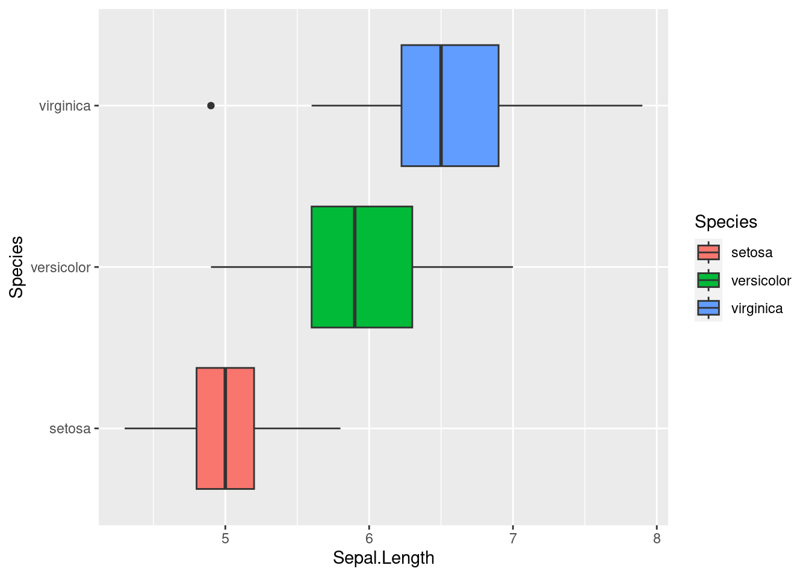
6.2.7 Các yếu tố khác
Bên cạnh các lớp biểu đồ đã phân tích trên, khi xây dựng biểu đồ với ggplot2, còn 2 nhóm câu lệnh thường sử dụng:
labs: Đặt tên bản đồ, chú giải, tên các trụctheme: Sử dụng để có bản đồ đẹp và phù hợp hơn
6.2.7.1 Labs
labs(title = "title",
subtitle = "subtitle",
x = "Trục x",
y = "Trục y",
caption = "Footnote")p <- mpg %>%
ggplot(aes(displ, hwy)) +
geom_point(col = "darkblue", alpha = 0.5, position = "jitter", size = 2) +
labs(title = "Highway miles per gallon by Engine displacement",
subtitle = "From mpg data set",
x = "Engine displacement",
y = "Highway miles per gallon",
caption = "Source: data science team")
p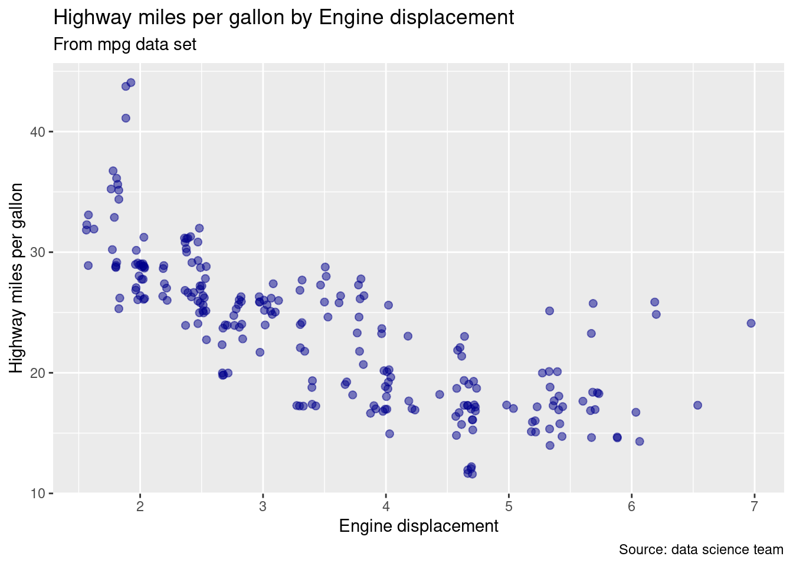
6.2.7.2 Theme
Khi xây dựng biểu đồ với ggplot2, ta có thể sử dụng rất nhiều theme có sẵn nhưng được dùng nhiều nhất là theme_bw(), theme_classic(), theme_minimal()
p <- iris %>%
ggplot(aes(Species, Sepal.Length)) +
geom_boxplot(aes(fill = Species), show.legend = F)
p1 <- p + labs(title = "Default theme")
p2 <- p + labs(title = "Theme black & white") +
theme_bw()
p3 <- p + labs(title = "Theme classic") +
theme_classic()
p4 <- p + theme_minimal() + labs(title = "Theme minimal")
p1 + p2 + p3 + p4 + plot_layout(ncol = 2)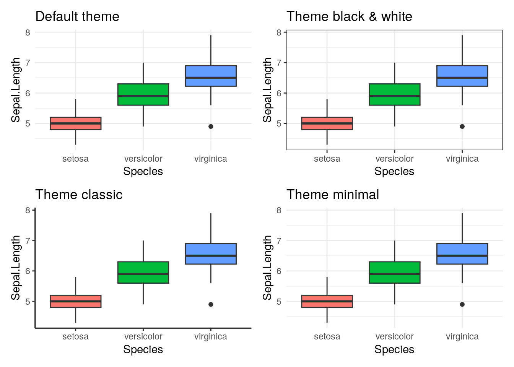
Để tùy chỉnh các thành phần có sẵn trong biểu đồ, ta có thể sử dụng hàm theme để customize từng thành phần như sau.
p + theme(
# Tên title
axis.title = element_text(family = "serif", face = "bold"),
# Tên của trục x và y
axis.title.x = element_text(family = "serif", face = "bold"),
axis.title.y = element_text(family = "serif", face = "bold"),
# Chữ trên trục
axis.text = element_text(face = "italic"),
# Xóa phần nền trong panel
panel.background = element_blank()
)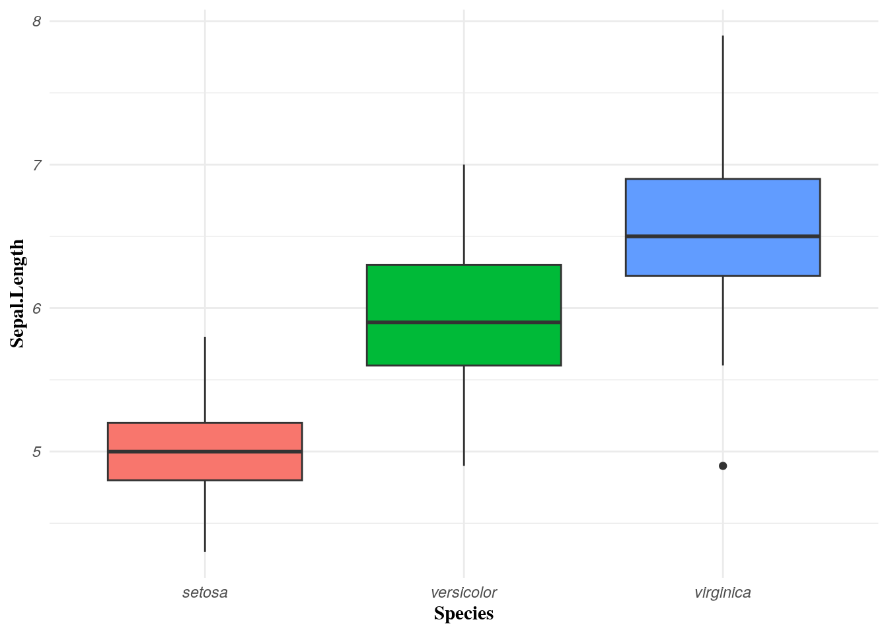
Để xem các yếu tố có thể tùy chỉnh trong theme, ta có thể sử dụng câu lệnh ?theme
’### Thay đổi màu trong biểu đồ
Hệ mã màu trong ggplot2 được chia làm 2 nhóm chính:
color: Với các nhóm biểu đồ điểm, đường (point,line)fill: Với các biểu đồ như biểu đồ cột, miền, boxplot
Bên cạnh đó, dải màu trong ggplot2 cũng được chia làm 2 nhóm
- Biến liên tục
- Biến rời rạc
Với biến màu rời rạc
# Điều chỉnh màu thủ công
p +
scale_fill_manual(values = c("836214", "brown", "#178349"))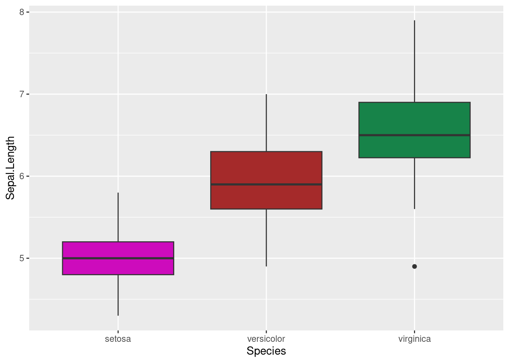
# Điều chỉnh màu theo nhóm có sẵn với scale_fill_brewer
p +
scale_fill_brewer(palette = "Set1") +
theme_minimal()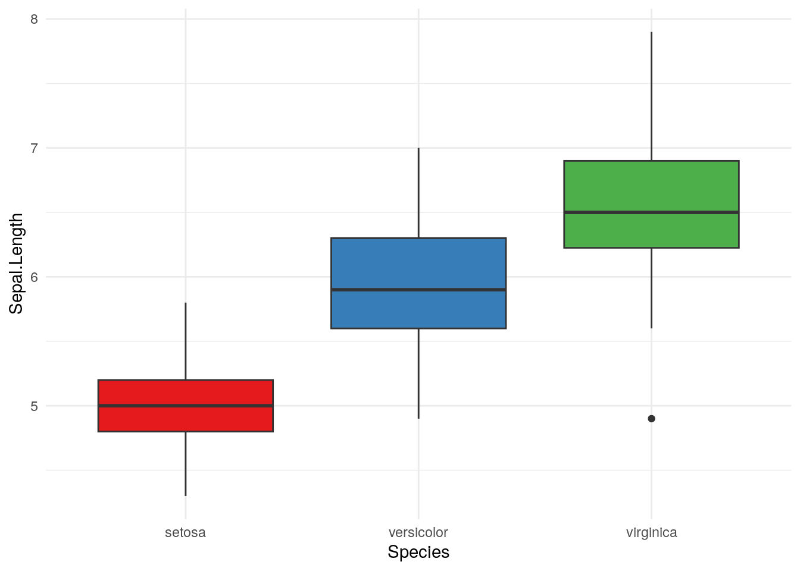
# Điều chỉnh scale_color
library(ggthemes)
iris %>%
ggplot(aes(Sepal.Length, Sepal.Width)) +
geom_point(aes(col = Species)) +
theme_classic() +
theme(legend.position = "top") +
scale_color_tableau()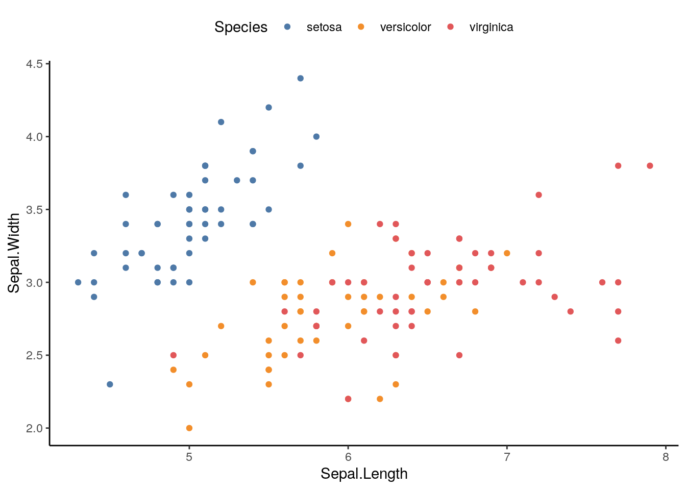
Với biến màu liên tục: Biến màu liên tục được thể hiện tốt nhất với dải màu từ package viridis như sau
library(viridis)
iris %>%
ggplot(aes(Sepal.Length, Sepal.Width)) +
geom_point(aes(col = Petal.Width)) +
theme_classic() +
theme(legend.position = "top") +
scale_color_viridis()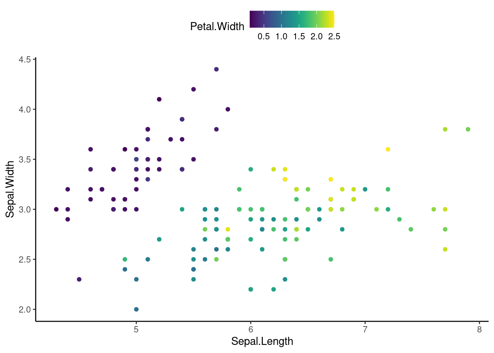
6.3 Các mẹo với ggplot2
6.3.1 Đặt global option cho theme
Khi bắt đầu project, ta có thể đặt một theme để sử dụng với tất cả biểu đồ với hàm theme_set.
theme_set(theme_classic() +
theme(legend.position = "top"))6.3.2 Loại bỏ legend trong 1 lớp
# Để cả 2 legend
iris %>%
ggplot(aes(Sepal.Length, Sepal.Width)) +
geom_point(aes(col = Species)) +
geom_smooth(aes(col = Species))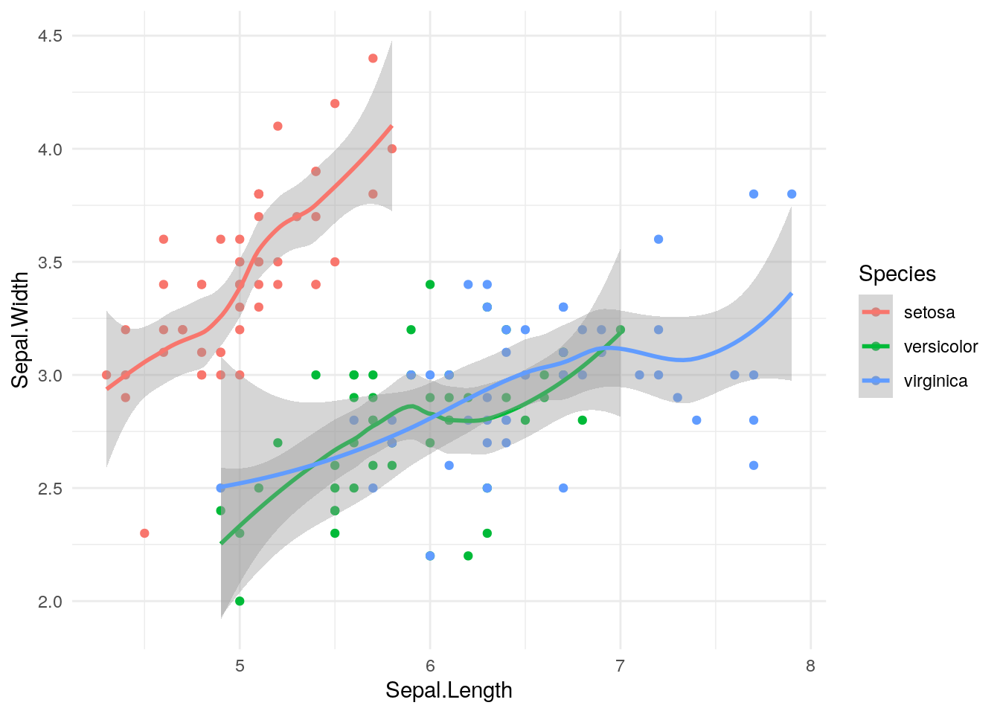
# Loại bỏ 1 legend
iris %>%
ggplot(aes(Sepal.Length, Sepal.Width)) +
geom_point(aes(col = Species)) +
geom_smooth(aes(col = Species), show.legend = F)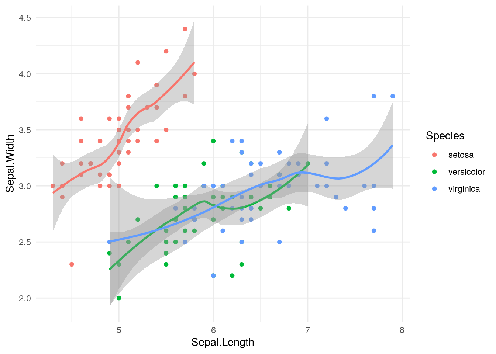
6.3.3 Format dữ liệu trong biểu đồ với scales
Với các kiểu đơn vị khác nhau trong biểu đồ, khi xây dựng biểu đồ ta cần tùy chỉnh để dữ liệu hiển thị tốt nhất. Bên cạnh kiểu dữ liệu factor và dạng numeric thông thường, ta cần quan tâm đến 3 kiểu hiển thị dữ liệu sau.
- Hiển thị kiểu dữ liệu tiền tệ
- Hiển thị kiểu dữ liệu phần trăm
- Hiển thị kiểu dữ liệu thời gian
library(tidyverse)
library(scales)
# Sử dụng theme_bw cho tất cả các biểu đồ
theme_set(theme_minimal() +
theme(legend.position = "top"))
# Tạo biểu đồ cơ bản
p <- ggplot(cars, aes(x = speed, y = dist)) +
geom_point(col = "darkblue", alpha = 0.5, size = 3)
p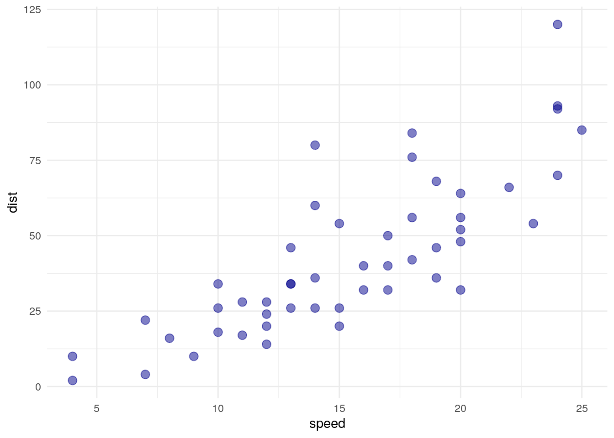
# Scale trục y với dạng percentage
p + scale_y_continuous(label = percent)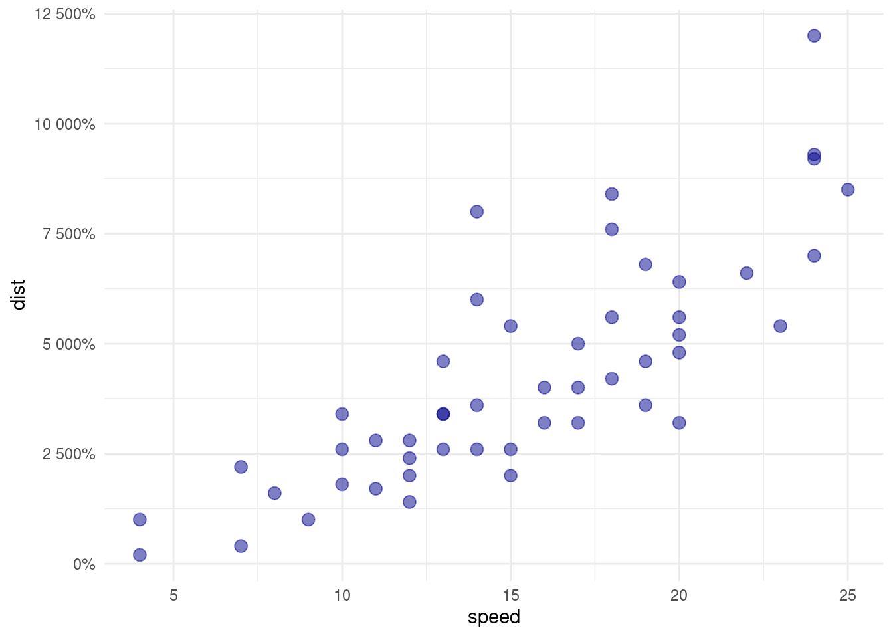
# Scale trục y với dạng dollar
p + scale_y_continuous(labels = dollar)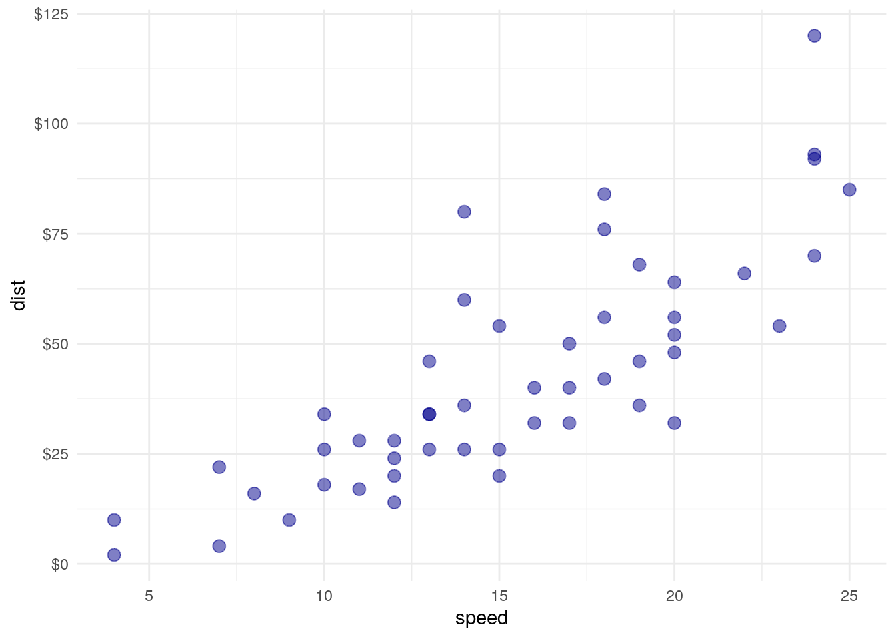
Đối với biểu đồ hiển thị dạng thời gian, ta cần kết hợp linh động hàm format với cấu trúc dữ liệu thời gian trong R strptime
df <- data.frame(
date = seq(12995, 13100, by = 1) %>% lubridate::as_date())
df <- df %>%
mutate(id = 1:nrow(.)) %>%
mutate(price = id * 3 + 10*sin(id) + rnorm(nrow(.),100,50)) %>%
select(-id)
p <- ggplot(data=df,
aes(x=date, y=price)) +
geom_line(col = "darkblue", size = 0.3)
df %>% head date price
1 2005-07-31 216.89306
2 2005-08-01 79.65974
3 2005-08-02 49.17288
4 2005-08-03 191.96243
5 2005-08-04 101.36842
6 2005-08-05 136.96591# Break theo tháng, format dạng tháng hiển thị số, năm
p + scale_x_date(breaks = date_breaks("month"),
labels = date_format("%m/%y")) 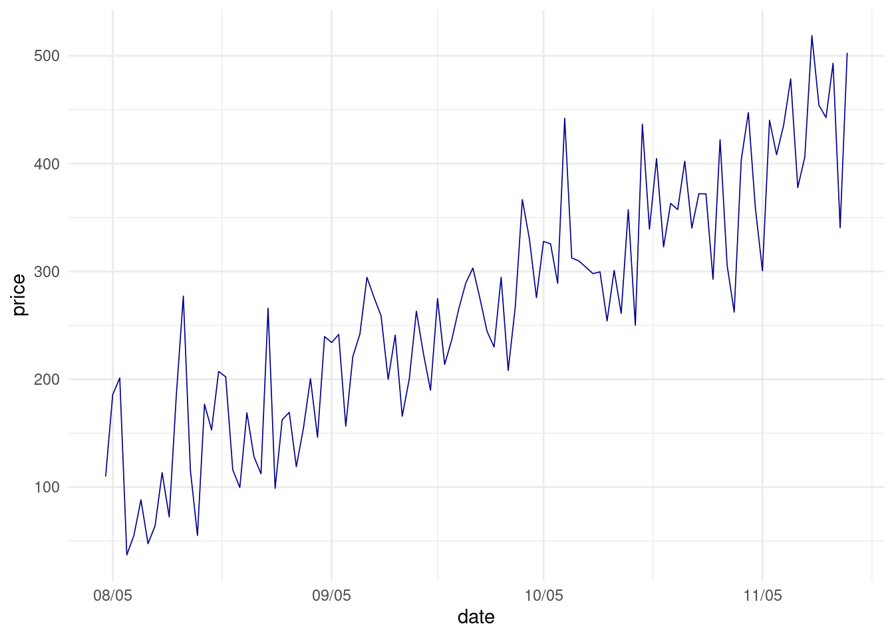
# Break theo tháng, format dạng tháng hiển thị chữ, năm
p + scale_x_date(breaks = date_breaks("month"),
labels = date_format("%b,%y")) 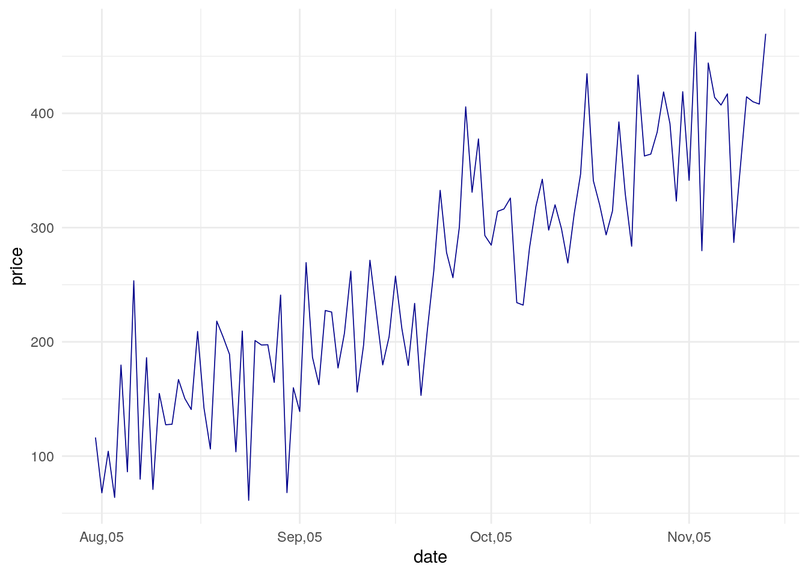
Để có thể tùy biến các định dạng ngày tháng trong R, ta kiểm tra các định dạng format qua câu lệnh
?strptime6.3.4 Làm nổi bật biểu đồ với annotate
Trong biểu đồ, để tạo hiệu ứng tốt nhất, ta có thể thêm các vùng highlight để làm nổi bật biểu đồ bằng cách sử dụng annotate.
Hàm annotate tương tự như geom nhưng khác biệt ở chỗ, tham số của annotate được thêm vào dưới dạng vector.
ggplot(cars, aes(x = speed, y = dist)) +
geom_point(col = "darkblue", alpha = 0.8, size = 3) +
annotate(xmin = 15, xmax = Inf, ymin = 0, ymax = Inf,
geom = "rect", fill = "darkred", alpha = 0.2)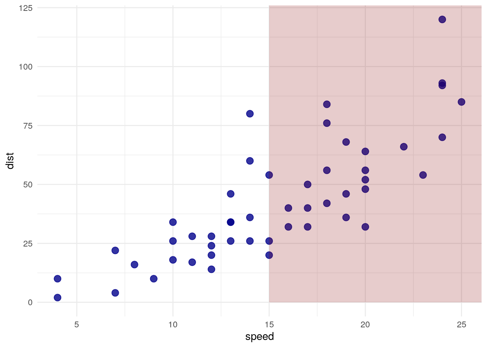
6.3.5 Hiển thị text biểu đồ ở giữa bar chart
- Sử dụng option
position = position_stack(vjust = 0.5)
df <- mpg %>%
group_by(class) %>%
summarise(no = n())
df %>%
ggplot(aes(class, no)) +
geom_bar(stat = "identity", fill = "darkblue", alpha = 0.6) +
geom_text(aes(label = no), position = position_stack(vjust = 0.5))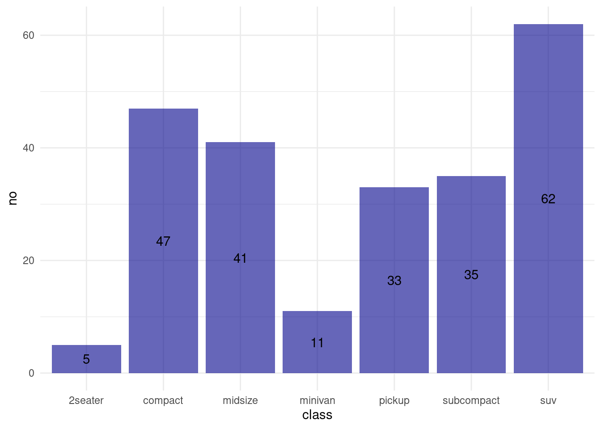
6.4 Các package bổ trợ cho ggplot2
Sự ra đời của ggplot2 giúp cho việc xây dựng biểu đồ rất nhanh chóng và sinh ra rất nhiều các package đi kèm mang tính bổ trợ thêm. Một số gói quan trọng nhất giúp việc xây dựng biểu đồ nhanh chóng hơn bao gồm:
patchwork: Cho phép kết hợp nhiều biểu đồggtext: Hiển thị text dạng markdowngghighlight: Cho phép highlight trong biểu đồgeomtextpath: Cho phép hiển thị text theo geom
6.4.1 Kết hợp nhiều biểu đồ với patchwork
Khi trực quan hóa dữ liệu, ta có thể kết hợp nhiều biểu đồ với nhau để thành 1 biểu đồ duy nhất. Để kết hợp các biểu đồ của ggplot2, ta có thể sử dụng package patchwork.
library(ggthemes)
p1 <- iris %>%
ggplot(aes(Species, Sepal.Length)) +
geom_boxplot(aes(fill = Species), show.legend = F) +
scale_fill_tableau()
p2 <- iris %>%
ggplot(aes(Sepal.Length, Sepal.Width)) +
geom_point(aes(col = Species), show.legend = F) +
scale_color_tableau()
p3 <- iris %>%
ggplot(aes(Sepal.Length)) +
geom_density(aes(fill = Species), alpha = 0.7, show.legend = F) +
scale_fill_tableau()# Kết hợp 2 biểu đồ với nhau
p1 + p2 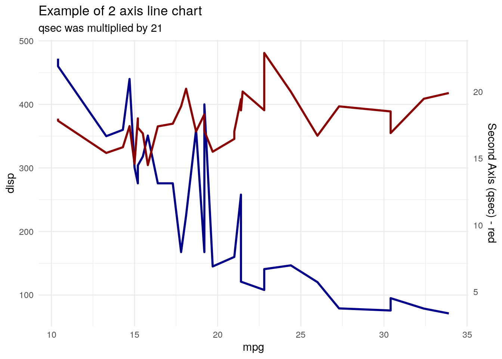
# Kết hợp 1 biểu đồ bên cạnh, 2 biểu đồ ở trên
p1 + (p2/p3)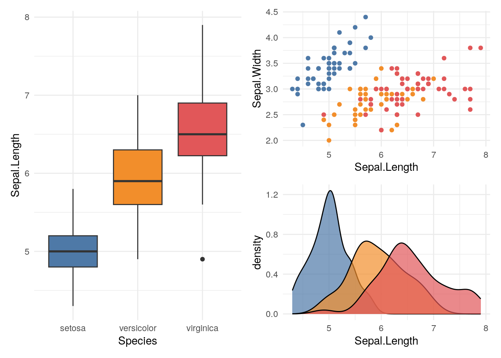
Ngoài ra, để điều chỉnh kích thước của từng biểu đồ, ta có thể dùng hàm plot_layout.
p1 + coord_flip() +
(p2 + p3 + plot_layout(ncol = 1)) +
plot_layout(widths = c(2,3))
6.4.2 Sử dụng ggtext để hiển thị dạng markdown
ggtext cho phép highlight các đoạn text trong biểu đồ theo cấu trúc ngữ pháp của markdown. Để sử dụng, ta đi qua 2 bước:
- Áp dụng cấu trúc markdown tại thành phần cần highlight
- Sử dụng
element_markdowntrong bước trên
library(ggplot2)
library(ggtext)
cars %>%
ggplot(aes(speed, dist)) +
geom_point(size = 3, col = "darkblue", alpha = 0.5) +
theme_minimal() +
labs(title = "Sample **chart**",
subtitle = "Speed is *correlated* with distance",
caption = "Made by ***Analytics team***") +
theme(plot.title = element_markdown(),
plot.caption = element_markdown(),
plot.subtitle = element_markdown())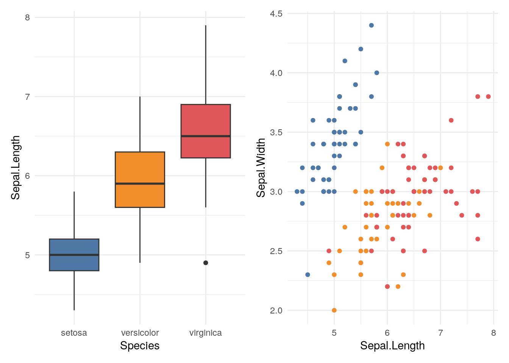
6.4.3 Highlight biểu đồ với gghighlight
library(dplyr)
library(ggplot2)
library(gghighlight)
my_theme <- function(){
list(
theme_bw(),
scale_fill_brewer(palette = "Set1"),
scale_color_brewer(palette = "Set1")
)
}
# Với biểu đồ bar
data <- mtcars %>% mutate(cyl = factor(cyl))
data %>%
group_by(cyl) %>%
summarise(mpg = sum(mpg)) %>%
ggplot(aes(cyl, mpg)) +
geom_bar(aes(fill = cyl), stat = "identity") +
geom_text(aes(label = mpg),
hjust = -0.3) +
my_theme() +
coord_flip() +
scale_y_continuous(limits = c(0, 320)) +
gghighlight(cyl == 6) +
labs(title = "Hightlight with text")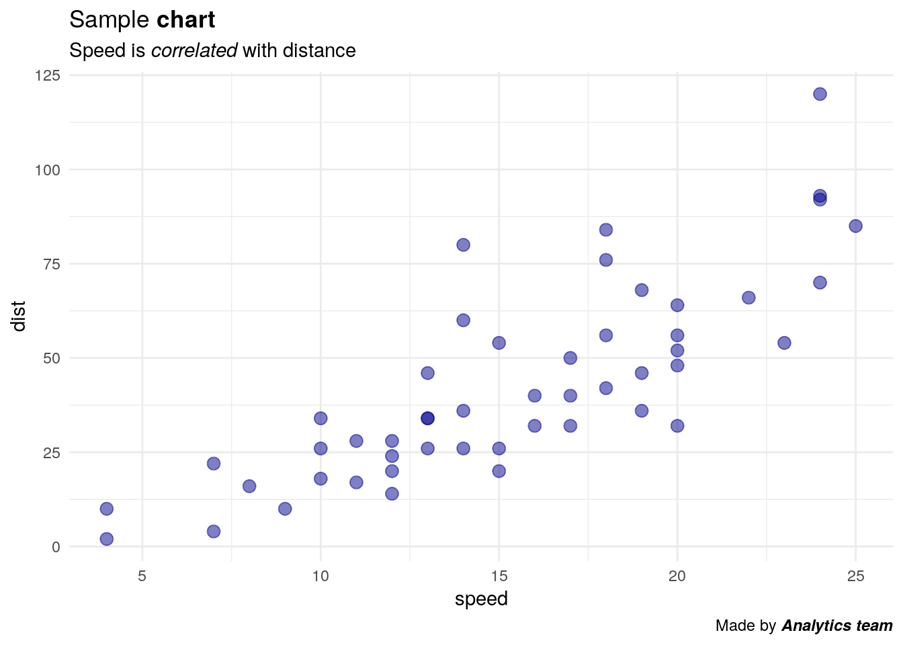
# Với boxplot
iris %>%
ggplot(aes(Species, Sepal.Length)) +
geom_boxplot(aes(fill = Species)) +
my_theme() +
facet_wrap(~Species) +
gghighlight() +
theme(legend.position = "top") +
labs(title = "Highlight for box plot")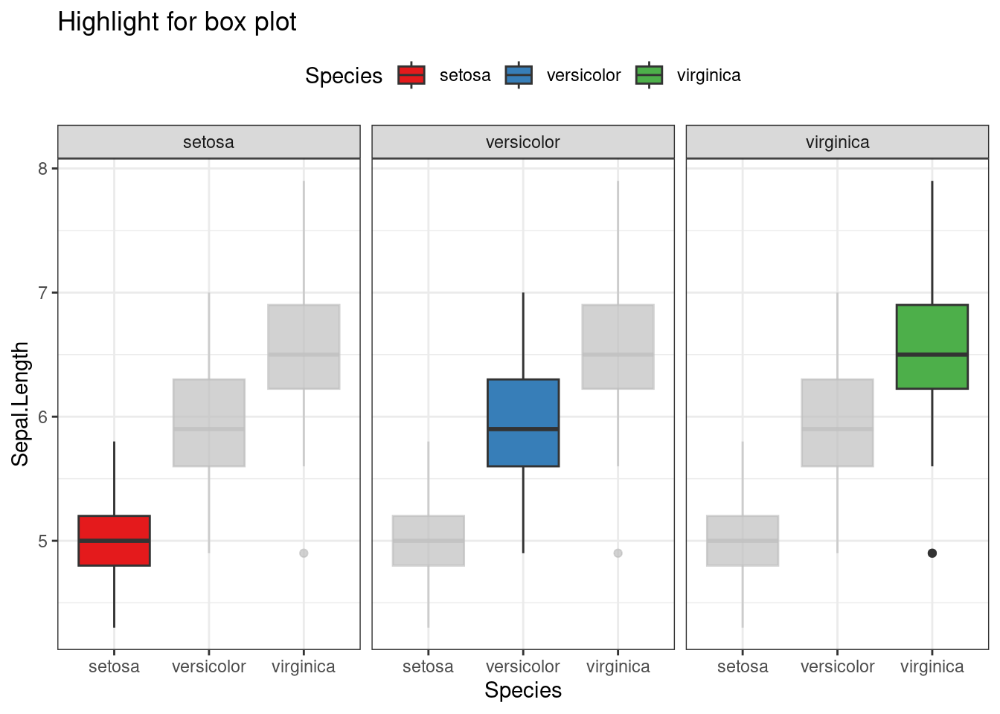
# Với biểu đồ điểm
df <- mtcars %>% mutate(name = row.names(.))
df %>%
ggplot(aes(mpg, disp)) +
geom_point(col = "darkred") +
my_theme() +
gghighlight(disp > 350 & disp <= 400,
unhighlighted_colour = alpha("darkgreen", 0.4), # Màu với các điểm không highlight
use_direct_label = T,
label_key = name,
label_params = list(size = 5)) +
geom_point(col = "darkred", size = 3) +
labs(title = "Example 5 - Hightlight points")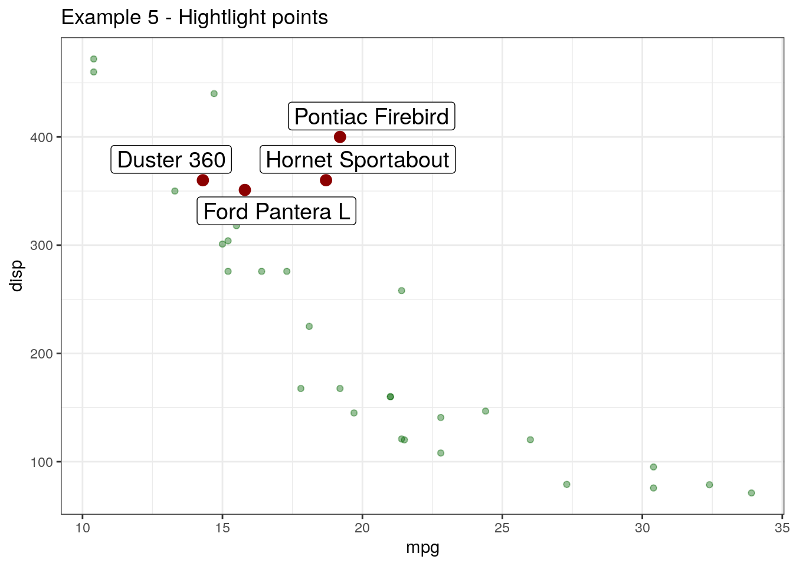
6.4.4 Hiển thị text theo geomtextpath
geomtextpath cho phép chèn text đi theo các pattern của density
Với density
library(geomtextpath)
# Chưa điều chỉnh vị trí
iris %>%
ggplot(aes(Sepal.Length, color = Species, label = Species, fill = Species)) +
geom_textdensity() +
theme(legend.position = "none") +
labs(title = "Text path chưa điều chỉnh vị trí")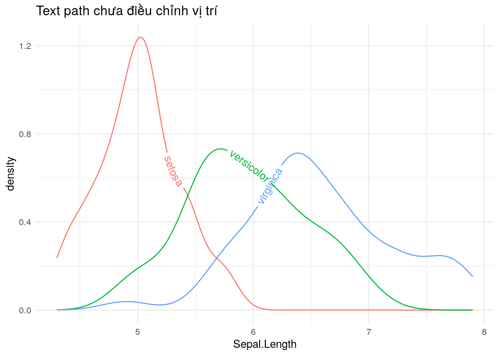
# Có điều chỉnh vị trí
iris %>%
ggplot(aes(Sepal.Length, color = Species, label = Species, fill = Species)) +
geom_textdensity(vjust = -0.3) +
theme(legend.position = "none") +
labs(title = "Text path có điều chỉnh vị trí")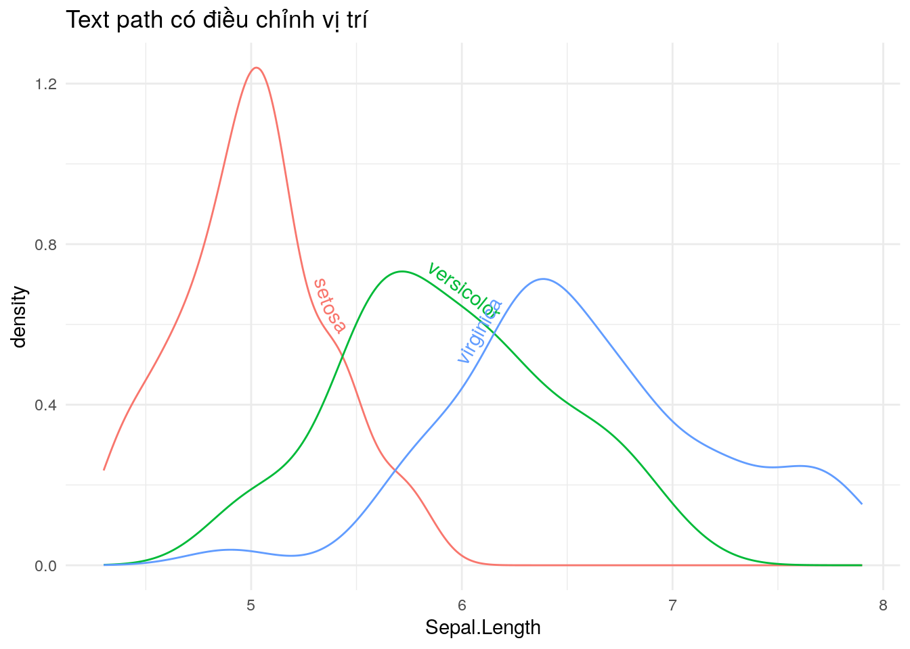
Với các line
iris %>%
ggplot(aes(Sepal.Length, Petal.Length)) +
geom_point(aes(col = Species), alpha = 0.2) +
geom_textsmooth(aes(label = Species, color = Species), size = 5, se = T) +
geom_textvline(xintercept = 6,
label = "Median value = 6",
linetype = "dashed",
hjust = 0.3,
vjust = 0.7,
size = 3,
col = "darkred") +
theme(legend.position = "none")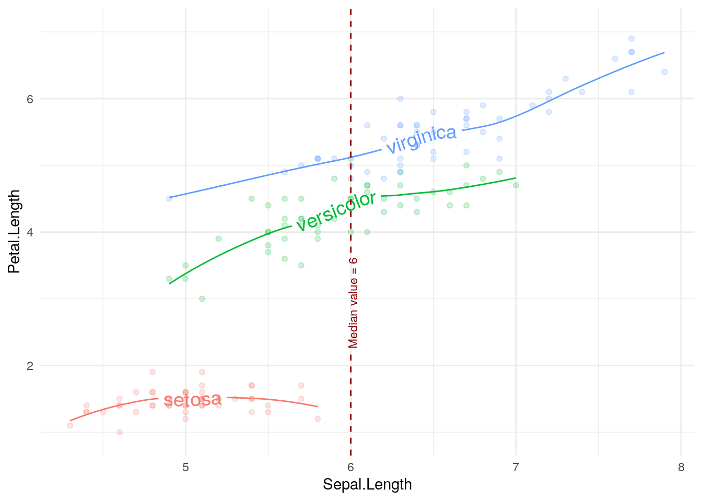
6.5 Tài liệu tham khảo
- R for Data Science - Chapter 3 - Data Visualisation
- [Modern data science with R - Chapter 3 - A grammar for graphics]